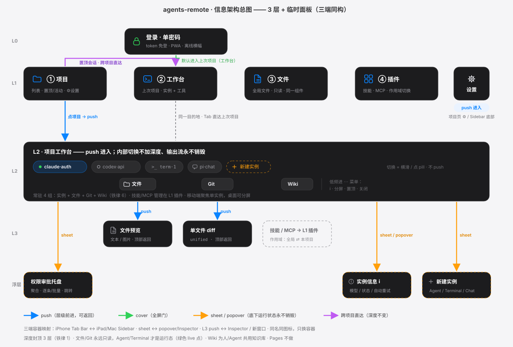

阅读动线：L0 → L1 → L2 → L3；箭头颜色区分跳转方式（蓝 push / 绿 cover / 橙 sheet / 紫 跨项目直达）

01-ia-flow.svg · 图解轨（无浅色变体）阅读动线：登录 → 建/采用项目 → 项目 Tab（全局活动 + 审批入口 + 项目列表）→ 插件（双市场入口）→ 全局文件 → 设置
06-login.html · HTML 轨08-sheet-new-project.html · HTML 轨02-tab-projects.html · HTML 轨02c-pill-context-menu.html · HTML 轨09-tab-plugins.html · HTML 轨10-tab-files-global.html · HTML 轨07-settings.html · HTML 轨阅读动线：骨架 03 → ① 空闲 → ② 出错+自动重试 → ③ 子 agent 展开 → ④ 空态 → ⑤ 断线 → 浮层（新建 / ℹ / 切换 / 历史 / 审批中心）→ 工具与深度（Git → 历史 → 提交 → 分支；文件 → 搜索 → 操作 → 新建 → 上传 → 预览 → diff；Wiki → 阅读）。所有状态共用同一页面骨架。
03-workspace-agent.html · HTML 轨03c-workspace-idle.html · HTML 轨03d-workspace-error.html · HTML 轨03e-subagent-expanded.html · HTML 轨03h-workspace-empty.html · HTML 轨03i-workspace-offline.html · HTML 轨03f-workspace-terminal.html · HTML 轨03g-workspace-chat.html · HTML 轨03j-sheet-new-instance.html · HTML 轨03k-sheet-instance-info.html · HTML 轨03l-sheet-project-switch.html · HTML 轨03n-sheet-session-history.html · HTML 轨11-approval-center.html · HTML 轨03m-workspace-git-tool.html · HTML 轨03t-git-history.html · HTML 轨03u-git-commit.html · HTML 轨03v-git-branches.html · HTML 轨03o-workspace-files-tool.html · HTML 轨03x-file-search.html · HTML 轨03w-file-actions.html · HTML 轨03y-file-create.html · HTML 轨03z-file-upload.html · HTML 轨03q-preview-file.html · HTML 轨03r-preview-diff.html · HTML 轨03p-workspace-wiki-tool.html · HTML 轨03s-wiki-reader.html · HTML 轨阅读动线：插件 Tab 市场两入口 → 选市场（MCP / 技能，源与类型绑定）→ 浏览/搜索 → 审计 → 安装 → 已安装管理。
17-market-browse.html · HTML 轨18-skill-market.html · HTML 轨16-install-audit.html · HTML 轨12-skill-detail.html · HTML 轨13-mcp-detail.html · HTML 轨14-mcp-add.html · HTML 轨15-market-sources.html · HTML 轨iPad = 三栏；Mac = Sidebar + 可分屏 + Inspector；含 审批中心 / 历史模式 / 浮层样式 / 文件菜单 的桌面形态。
04-ipad-workspace.html · HTML 轨05-mac-workspace.html · HTML 轨05f-mac-approval-center.html · HTML 轨05c-mac-history-sidebar.html · HTML 轨05g-mac-all-sessions.html · HTML 轨10-mac-files-global.html · HTML 轨09-mac-plugins.html · HTML 轨07-mac-settings.html · HTML 轨05d-mac-popover-new-instance.html · HTML 轨05e-mac-inspector-file-menu.html · HTML 轨顶部「深色 / 浅色」开关 = 全图联动：HTML 轨经 postMessage 换 <html data-theme>。全部 50 页页面原型均为运行时双主题——点开关即可预览任意页面的浅色形态，因此不产浅色样例图；图解轨 01 为唯一深色静态图。命名规则（数字段后插 x + -light）仅供未来新增 SVG 图解使用，无变体自动回退深色。
唯一事实源 = tokens.json（语义名两态一致，换值不换名）；实现侧禁止散落 HEX。组件单源 = assets/components.css（改一处，全部 HTML 轨页生效）；颜色单源 = assets/tokens.css；主题联动 = assets/theme.js（postMessage + localStorage 双通道）。
#007AFF / #0A84FF#34C759 / #30D158#FF9F0A / #FF9F0A#FF3B30 / #FF453A#AF52DE / #BF5AF2#F2F2F7 / #000#FFF / #1C1C1E#1C1C1E / #F2F2F7方法论：双轨制（页面=HTML 轨 / 图解=SVG 轨）· 基准端原则（iPhone 先行）· 一功能一入口 · 只读边界（结构操作入工具，内容编辑归 Agent）· 状态点语言（绿运行/灰空闲/红出错）· 单源组件（components.css 改一处全生效）· 主题联动（index 开关 → iframe postMessage + SVG 变体换图）· HTML 轨阅读约定：每页 = stage 舞台（元素旁挂编号 pin）＋ 下方「编号说明」面板，序号一一对应 · 增量确认节奏。